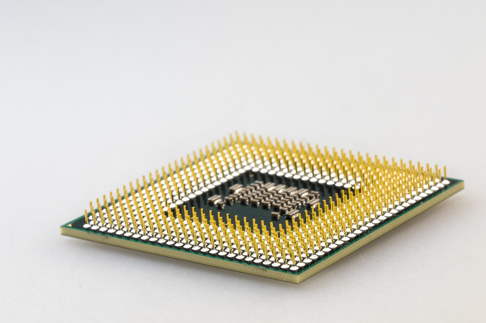
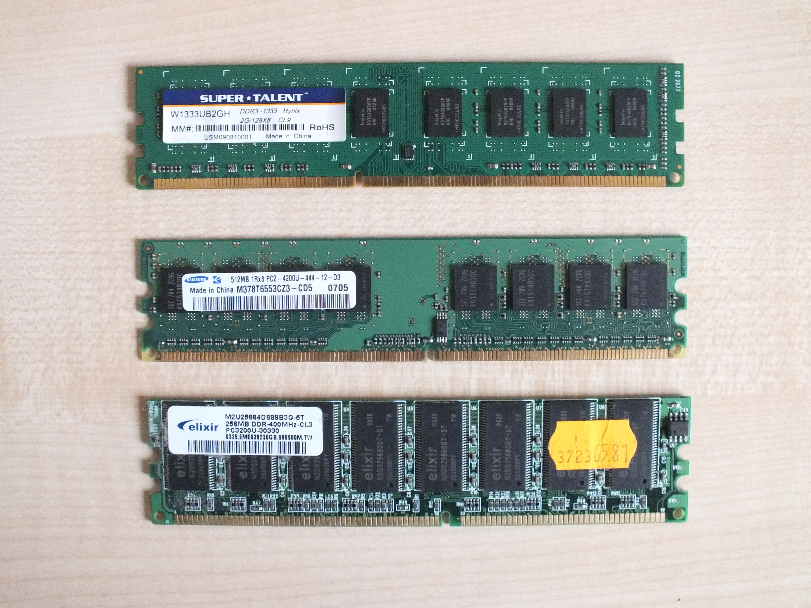
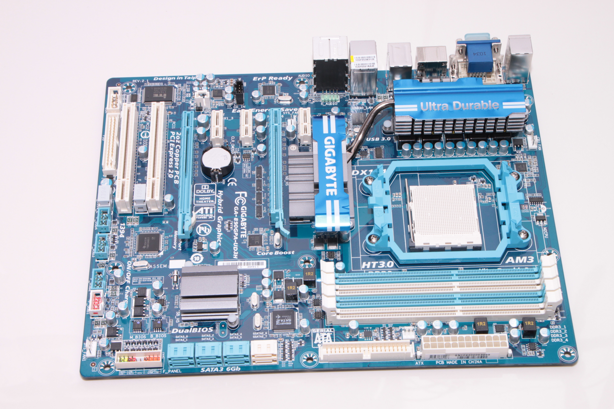

Das Computerlexikon
Die CPU ist das Hauptrechen- und Steuerungszentrum eines Computers, das für
die
Ausführung von Befehlen und die Verarbeitung von Daten verantwortlich ist.
Kürzel: Central Processing Unit

RAM oder Arbeitsspeicher ist eine Hardwarekomponente eines Computers, die
(temporäre) Daten und Programmcode kurzzeitig speichert, auf die die CPU schnell
zugreifen kann.
Kürzel: Random Access Memory

Das Mainboard, kurz MB, ist die Hauptplatine eines Computers, die alle wichtigen
Komponenten miteinander verbindet, darunter die CPU, den Arbeitsspeicher, die
Erweiterungskarten und die Schnittstellen für Peripheriegeräte.
Kürzel: Motherboard

Die GPU oder Grafikkarte ist eine spezialisierte Hardwarekomponente, die für die
schnelle und effiziente Verarbeitung von Grafik- und Bildinformationen in
Computersystemen verantwortlich ist.
Kürzel: Graphics Processing Unit

Um Daten langfristig zu speichern, werden Langzeitspeicher benötigt. Hierzu gibt
es zwei Typen von Laufwerken:
Eine SSD ist ein Speicherlaufwerk, das Daten elektronisch auf
Flash-Speicherchips speichert, während eine HDD ein Speicherlaufwerk ist, das
Daten magnetisch auf rotierenden Scheiben speichert.
Kürzel: